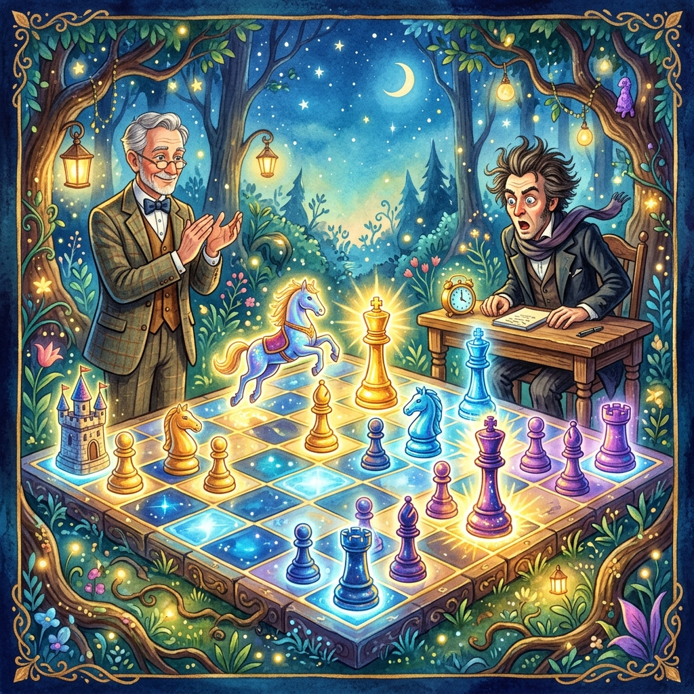

El Pescador y el Elegante
Donde dos almas legendarias del ajedrez descienden al Reino de las Sesenta y Cuatro Casillas, y Martina descubre que la oposición no es solo cosa de reyes
♟️ Ver la partida de Fischer vs Spassky ↓▶️ ¿Prefieres escuchar la historia? Clic aquí para ver el Audiolibro Animado
Aquella noche, Martina no se durmió leyendo sobre aperturas ni analizando variantes. Se durmió viendo un documental sobre el match del siglo: Fischer contra Spassky, Reikiavik 1972. Dos hombres. Un tablero. El mundo entero mirando. Toda la Guerra Fría comprimida en sesenta y cuatro casillas. Y ella, con nueve años, pensando: «Esto es mejor que cualquier película.»
—Uno era un genio imposible —le había explicado su profe—. Exigía que las sillas midieran exactamente cuarenta y siete centímetros. Que el tablero tuviera un brillo específico. Que el silencio fuera absoluto. Fischer no jugaba contra personas: jugaba contra el universo. Y el universo, generalmente, perdía.
—¿Y el otro?
—Spassky era lo contrario. Tranquilo. Elegante. Cuando Fischer jugaba algo brillante, Spassky... aplaudía. En serio. Aplaudía a su rival en medio de un campeonato del mundo. Nadie había hecho eso antes. Nadie lo ha hecho después. Era un caballero.
Martina se durmió pensando en esas dos almas. La tormenta y la calma. El huracán y la brisa. El que nunca estaba satisfecho y el que siempre encontraba belleza, incluso en la derrota.
Despertó en el Reino de las Sesenta y Cuatro Casillas. Pero algo era diferente. El cielo cuadriculado tenía gradas. Gradas llenas de piezas. Peones blancos y negros apiñados como público en un estadio, con pancartas hechas de escaques y banderas de diagonales. La estrella rebelde de h12 se había puesto un sombrero de árbitro.
—¿Qué está pasando? —preguntó Martina a Peoncito, que estaba en primera fila con un cucurucho de empanada en una mano y un banderín en la otra. El banderín decía: «PEONES UNIDOS JAMÁS SERÁN CAPTURADOS EN DIAGONAL». Era una mentira obvia, pero quedaba bonito.
—¡El match del milenio! —chilló Peoncito—. Dos leyendas del ajedrez han sido invocadas por la Reina Blanca. Dos almas que jugaron la partida más famosa de la historia. Bueno, una de las más famosas. Bueno, está en el top cien. Bueno, en el top doscientos seguro.
—¿Qué leyendas?
Peoncito señaló con su cucurucho hacia el centro del tablero. Allí había dos figuras que Martina reconoció al instante, aunque ninguna de las dos se parecía exactamente a las fotos del documental.
La primera era un hombre de ceño imposible, como si sus cejas estuvieran permanentemente discutiendo entre ellas. Vestía una capa hecha enteramente de notaciones de partidas (57...Df3+ era la manga izquierda). Estaba midiendo su silla con una regla. La silla era de mármol negro. Medía exactamente cuarenta y siete centímetros. Él insistía en que medía cuarenta y seis y medio.
—Esta silla —dijo el hombre, y su voz era un trueno contenido— tiene un error de medio centímetro. Yo no juego en sillas imprecisas. Las sillas imprecisas generan pensamientos imprecisos. Y yo no tengo pensamientos imprecisos. Todos mis pensamientos son de cuarenta y siete centímetros exactos.
—Es una silla, Roberto —dijo la Reina Blanca, con una paciencia que solo una reina inmortal puede tener.
—No es una silla. Es una posición. Y la posición está mal.
Martina lo observó. Roberto Pescador. El genio. El huracán. El hombre que una vez exigió que retiraran todas las cámaras del torneo porque «el zumbido de los lentes le interfería el cálculo de variantes». En el Reino de las Sesenta y Cuatro Casillas no había cámaras. Pero él igual miraba al cielo, desconfiado.
—Esa estrella de h12 me está mirando —dijo—. Que deje de mirarme.
La estrella de h12, que era rebelde por naturaleza, titiló más fuerte.
La segunda figura era exactamente lo opuesto. Un hombre alto, sereno, con un aire de quien está de vacaciones en un spa incluso cuando juega la partida más importante de su vida. Vestía un traje que parecía planchado por hadas y un sombrero que no se caía aunque hiciera viento diagonal (que en ese reino era el único tipo de viento que existía).
—Boris el Sereno —susurró Peoncito—. Dicen que una vez jugó una partida de catorce horas y pidió un té en la jugada treinta y siete. Con galletitas.
Boris el Sereno observó la discusión de la silla con una sonrisa tenue. No una sonrisa burlona. Una sonrisa de genuina diversión. Como quien ve a un gato intentar atrapar su propia cola. Luego se sentó en su silla (que medía lo que midiera, a él no le importaba) y se puso a silbar una melodía que nadie reconoció pero que todos encontraron agradable.
—Qué hombre tan fascinante —dijo Boris, refiriéndose a Roberto Pescador, que seguía midiendo la silla—. Miren la intensidad. Esa energía es la que separa a los genios de los mortales. Yo nunca tuve esa energía. Yo siempre fui más de... —hizo una pausa—... silbar.
—¡Y ganaste el campeonato del mundo! —gritó Peoncito.
—Ah, sí. Eso también. Pero lo del silbido es más difícil. Créeme.

Finalmente, después de que la Reina Blanca hiciera aparecer mágicamente una silla de cuarenta y siete centímetros exactos (que Roberto midió tres veces, aceptando con un gruñido), el match comenzó.
Las piezas se colocaron. El silencio se extendió como una capa de nieve. Hasta el Reloj Parlante, colgado de su poste, enmudeció por voluntad propia, lo cual era un acontecimiento histórico que merecía su propio titular.
El sorteo dictó que Roberto llevaría blancas. Lo cual era bueno, porque si le hubieran tocado negras, probablemente habría pedido que cambiaran el color del tablero.
Roberto jugó e4. Agresivo. Clásico. Su peón saltó dos casillas con la energía de un resorte comprimido durante años.
Boris respondió c5. Defensa Siciliana. La respuesta más combativa. El hombre que silbaba no venía a empatar. Venía a jugar.
—Siciliana —murmuró Martina, y sintió un escalofrío de emoción—. No me lo puedo creer. Estoy viendo esto en vivo.
—Pues claro que puedes —dijo Peoncito—. Estás dormida. Todo es posible. La semana pasada soñé que era una dama y me perseguía un sándwich.
—Cállate y mira.
Roberto desarrolló Cf3. Boris d6. Roberto d4. Boris cxd4. Roberto Cxd4. Boris Cf6. Roberto Cc3. Boris a6.
—Variante Najdorf —dijo Martina—. La línea más agresiva de la Siciliana. Boris no está jugando a defenderse. Está jugando a ganar.
—Y eso que es el tranquilo —comentó Peoncito—. Si este es el tranquilo, no quiero ver al agresivo cuando se enoja.
En ese momento, Roberto se detuvo. Miró a Boris. Miró el tablero. Miró a la estrella de h12, que seguía titilando.
—Esa estrella —dijo— está transmitiendo mis jugadas. Lo sé.
La estrella, ofendida, se apagó un segundo.
—No transmite nada —dijo la Reina Blanca—. Es una estrella.
—Eso diría una estrella espía.
La partida se convirtió en una obra de arte. Roberto atacaba con precisión quirúrgica. Boris se defendía con elegancia. Cada jugada era un argumento. Cada respuesta, un contraargumento.
Para la jugada veinte, la posición estaba equilibrada. Roberto tenía una ligera ventaja de espacio. Boris tenía una defensa sólida como una roca. Pero el reloj de Roberto corría más rápido. Había gastado diez minutos decidiendo el ángulo exacto de su alfil en e3.
—El alfil estaba torcido —explicó al árbitro—. Un grado. Quizás dos.
—Los alfiles no se tuercen —dijo el árbitro.
—Este sí. Mírele la mitra. Está inclinada tres milímetros a la izquierda.
El Alfil Exiliado, que casualmente era el alfil en cuestión, se ofendió profundamente. «Mi mitra está perfectamente centrada —dijo—. La he medido yo mismo. Con una escuadra. Que me prestó un peón arquitecto.»
Boris, mientras tanto, se tomaba un té. Había aparecido una taza de la nada sobre la casilla g8. Nadie preguntó de dónde había salido. Era Boris. Las tazas de té simplemente aparecían donde él estuviera. Era su superpoder.
La partida llegó al final. Se habían cambiado damas. Se habían cambiado torres. Quedaban pocas piezas sobre el tablero. Un rey blanco en e4. Un rey negro en e6. Unos cuantos peones. Y un concepto que Martina reconoció de sus estudios.
—Esto es zugzwang —dijo Martina en voz baja—. O va a serlo.
Peoncito la miró sin entender.
—¿Zug... qué?
—Zugzwang. Es alemán. Significa «obligación de mover». Es cuando cualquier jugada que hagas empeora tu posición. Estás perdido no porque el rival te amenace, sino porque mover es malo y no mover no es una opción. Es como... —Martina buscó la metáfora—... como cuando tu mamá te dice que elijas entre lavar los platos o tender la cama. Las dos opciones son malas. Pero tienes que elegir una.
—En mi caso —dijo Peoncito— sería elegir entre que me capturen en diagonal o que me ignore el resto de la partida. Lo segundo es peor.
—Exacto. Eso es zugzwang.
La posición en el tablero era la siguiente: Roberto tenía el rey en e4. Boris el rey en e6. Se miraban. Como dos pistoleros en un duelo del oeste. Pero con menos balas y más peones.
—Oposición —explicó Martina a Peoncito, que ya había sacado una libreta diminuta y fingía tomar apuntes—. Los reyes están enfrentados. El que tiene que mover está en desventaja. Porque mover el rey abre el paso al rey enemigo. Y mover un peón es debilitarse.
Roberto Pescador acababa de jugar Re4. Su rey miraba fijamente al rey de Boris. Le tocaba mover a Boris. Y Boris... sonrió.
—Zugzwang —dijo Boris, y su voz fue la de un profesor que acaba de ver a un alumno resolver el problema más difícil del examen—. Estoy en zugzwang. Si muevo mi rey, el suyo entra. Si muevo un peón, se debilita mi estructura. Cualquier cosa que haga... me acerca a la derrota.
Hizo una pausa. Dio un sorbo a su té.
—Es una jugada bellísima —dijo—. De verdad. Miren esa oposición. Miren ese control de las casillas críticas. Miren cómo mi propia obligación de mover se convierte en mi peor enemiga.
Y entonces Boris el Sereno hizo algo que Martina jamás olvidaría.
Aplaudió.
Tres palmadas. Lentas. Solemnes. Como las campanas de una iglesia.
—Bravo, Roberto —dijo—. Has jugado un final perfecto.

Roberto Pescador se quedó inmóvil. Sus cejas, que habían estado discutiendo toda la partida, se congelaron en una tregua temporal. Miró a Boris. Miró el tablero. Miró sus propias manos.
—No... no se aplaude al rival —dijo, y su voz, por primera vez en toda la noche, sonó desarmada—. Se le gana. O se le pierde. Pero no se le aplaude.
—Yo aplaudo —dijo Boris—. Cuando la belleza aparece, hay que reconocerla. Aunque venga del otro lado del tablero. A veces, el mejor tributo que puedes hacerle a tu oponente es decirle: «Eso fue hermoso. Gracias.»
Hubo un silencio. El silencio más grande que el Reino de las Sesenta y Cuatro Casillas había experimentado desde que el Reloj Parlante se calló por primera vez (lo cual acababa de pasar hacía veinte minutos, pero ya era leyenda).
Boris movió su rey. Rf6. La única jugada posible. Y entonces Roberto avanzó su rey: Rd5. Las blancas entraban. Las negras se desmoronaban. Boris jugó Rf5. Roberto jugó e6. El peón blanco avanzó. Boris movió Rf6. Roberto jugó Rd6. El rey blanco escoltaba a su peón como un guardaespaldas. Boris movió Rf5. Roberto jugó e7. Boris no tenía más jugadas. No había hacia dónde ir sin perder el peón o dejar pasar al rey enemigo.
Boris se inclinó ligeramente. No con tristeza. Con respeto. Como un espadachín que saluda a su rival después de un duelo limpio.
—Abandono —dijo—. Y lo digo con la misma satisfacción que si hubiera ganado. Porque he visto ajedrez del bueno hoy. Del que no se olvida.
Roberto lo miró fijamente. Sus cejas, por primera vez en quién sabe cuántos años, se relajaron. Una casi sonrió. La otra no, porque era la ceja desconfiada, la que siempre sospechaba de todo. Pero la primera sonrió. Y eso ya era un milagro.
—El té —dijo Roberto—. ¿De qué era?
—De jazmín —respondió Boris.
—Nunca he probado el té de jazmín.
Boris hizo un gesto y una segunda taza apareció en la casilla e4, justo al lado del rey blanco.
—Ahora sí.
Y Roberto Pescador, el genio imposible, el huracán humano, el hombre que medía sillas y desconfiaba de estrellas, dio un sorbo de té de jazmín. Y no se quejó. Lo cual, viniendo de él, era como si hubiera ganado otro campeonato del mundo.
Después del match, Martina se acercó a Boris. El hombre estaba recogiendo su taza de té y su sombrero. Seguía silbando. Seguía tranquilo.
—¿Siempre eres así? —preguntó Martina—. ¿Tan... sereno?
Boris la miró. Sus ojos eran como dos tableros en calma.
—El ajedrez —dijo— es demasiado hermoso para sufrirlo. Se sufre cuando uno cree que ganar es lo único que importa. Pero cuando entiendes que cada partida es una conversación, incluso las que pierdes te enriquecen. —Dio un sorbo de té—. Y además, el té ayuda.
Martina se volvió hacia Roberto, que seguía en su silla (cuarenta y siete centímetros exactos). El genio miraba el tablero vacío. Pero ya no con desconfianza. Con algo distinto. Curiosidad, quizás.
—¿Y tú? —preguntó Martina—. ¿Siempre tan exigente?
Roberto tardó en responder. Lo suficiente para que la estrella de h12 titilara cinco veces.
—La perfección —dijo— no existe. Pero eso no significa que no debamos perseguirla. Cada jugada que hago, cada línea que calculo, cada silla que mido... es un intento de acercarme a algo que no voy a alcanzar nunca. Y sin embargo... —miró su taza de té vacía—... a veces el rival te enseña algo que no esperabas. Y eso también es perfección.
—Como un aplauso —dijo Martina.
Roberto no dijo nada. Pero su ceja izquierda —la buena— se curvó ligeramente hacia arriba. Y Martina supo que, en el lenguaje secreto de los genios imposibles, eso era un sí.
La fiesta posterior al match fue legendaria. Torreta sirvió una empanada nueva que inventó para la ocasión: la «Empanada Pescador» (de pescado, obviamente, con un toque de limón que representaba la acidez de Roberto) y la «Empanada Sereno» (de verduras al vapor, con té de jazmín en la masa). La primera se vendió bien. La segunda solo la pidió Boris. Y le gustó.
El Caballo de Ŋ le preguntó a Roberto si podía enseñarle a calcular variantes. Roberto dijo que sí, pero solo si el caballo se comprometía a saltar en L perfecta. El Caballo de Ŋ lo intentó. Falló. Roberto dijo: «Eso no es una L.» El caballo respondió: «Era una L con acento.» Roberto se fue. Pero antes de irse, por encima del hombro, murmuró: «Practica. Y vuelve en un año.»
Peoncito le pidió un autógrafo a Boris. Boris se lo dio encantado. En la dedicatoria ponía: «Para Peoncito, que pronto coronará. Disfruta cada casilla del camino. —Boris.» Peoncito enmarcó el autógrafo y lo colgó en la séptima fila, junto a la puerta de luz.
Martina sintió que el tablero se volvía suave. Hora de volver.
Antes de irse, se acercó una última vez a los dos maestros. Estaban sentados en las gradas vacías, cada uno con su taza de té. Roberto ya no medía distancias. Boris ya no silbaba. Solo estaban allí, dos viejos rivales, viendo las estrellas cuadriculadas.
—¿Volverán a jugar? —preguntó Martina.
Boris sonrió. Roberto no. Pero su ceja izquierda sí.
—El ajedrez —dijo Boris— no termina cuando acaba la partida. Termina cuando dejas de querer jugar. Y nosotros... —miró a Roberto— aún no hemos terminado.
Roberto no dijo nada. Pero dio un sorbo a su té. Y no se quejó de la temperatura. Lo cual, en su lenguaje, era un poema de amor.
Fin del séptimo cuento.
Continuará…
🏛️ El Secreto detrás del Cuento
Este cuento relata el espíritu del legendario "Match del Siglo" (Reikiavik, 1972) entre el excéntrico genio estadounidense Bobby Fischer ("El Pescador") y el caballero soviético Boris Spassky ("El Elegante"). En la histórica Partida 6, Fischer jugó de manera tan brillante e impecable que Spassky, en un acto de deportividad sin precedentes en un campeonato mundial, se puso de pie y aplaudió a su rival. ¡Revive la magia reproduciendo esa misma partida real!